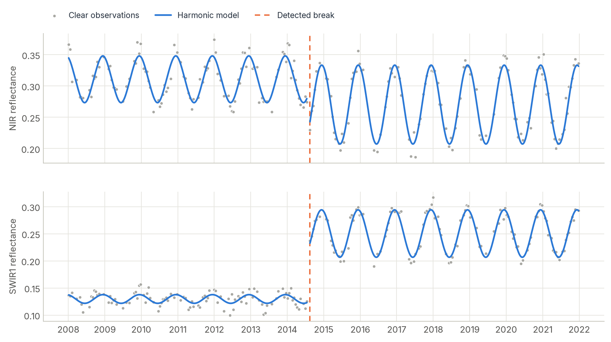

CCDC¶
Continuous Change Detection and Classification models the seasonal rhythm of every pixel from all available clear images, and flags the moment that rhythm breaks. It detects changes at any time of year and describes what the land looks like before and after.

How CCDC works¶
Vegetation follows a yearly cycle, so a pixel's reflectance rises and falls with the seasons. CCDC describes that cycle with a small harmonic model (a trend line plus sine and cosine waves) fitted to all clear observations:
Each new observation is compared with the model's prediction. If six consecutive observations (by default) all deviate more than a chi-squared threshold, in several bands at once, CCDC declares a break, closes the current model, and starts a new one after it. The model coefficients are also useful by themselves. They describe the "average" appearance of each stable period and make excellent features for land-cover classification.
Compared with LandTrendr, CCDC uses every clear image instead of one per year, works on several bands together, and can date a change to within a few weeks. The price is that it needs dense, well-masked data.
Step by step¶
1. Load a dense stack¶
CCDC works on all clear Landsat-like observations. It expects:
- Bands Blue, Green, Red, NIR, SWIR1, SWIR2 (optionally a thermal band), as surface reflectance × 10,000. The original's thresholds are defined on that scale, so convert 0–1 reflectance first. For Landsat Collection 2 Level 2 digital numbers, reflectance × 10,000 is
0.275 * DN - 2000. - Dates for every observation. A cube carries them in its
timecoordinate, so there is nothing to pass.
zeit.load_raster reads a stack as a georeferenced (time, band, y, x) cube. Here each date has the 6 spectral bands and Landsat's QA_PIXEL band, named 2008-01-05_blue, 2008-01-05_green, …, 2008-01-05_qa_pixel (how save_raster writes a cube). A cube from build_time_series, or a folder of single-date files read with pattern=, works the same way.
import numpy as np
import zeit
cube = zeit.load_raster("landsat_dense_stack.tif", validate="ccdc")
cube.dims # ('time', 'band', 'y', 'x')
cube.band.values # array(['blue', 'green', 'red', 'nir', 'swir1', 'swir2', 'qa_pixel'], ...)
validate="ccdc" warns when the series looks unfit for CCDC (too few dates, values that do not look scaled). For a stack interleaved by date without band names, see Processing large areas.
2. Build the QA codes¶
CCDC uses the Fmask codes of the original implementation:
| Code | Meaning | Used for fitting? |
|---|---|---|
0 |
clear land | yes |
1 |
water | yes |
2 |
cloud shadow | no |
3 |
snow | handled separately |
4 |
cloud | no |
255 |
no observation / fill | no |
For Landsat Collection 2, decode the QA_PIXEL bit flags:
qa_pixel = cube.sel(band="qa_pixel").values.astype(np.uint16) # (time, y, x)
qa = np.zeros(qa_pixel.shape, dtype=np.uint8) # 0 = clear land
qa[(qa_pixel & (1 << 7)) != 0] = 1 # water
qa[(qa_pixel & (1 << 4)) != 0] = 2 # cloud shadow
qa[(qa_pixel & (1 << 5)) != 0] = 3 # snow
qa[(qa_pixel & (1 << 3)) != 0] = 4 # cloud
qa[(qa_pixel & 1) != 0] = 255 # fill
reflectance = cube.drop_sel(band="qa_pixel") # blue ... swir2
1 means water, not cloud
A mask with 0 = clear, 1 = cloudy is wrong for CCDC: code 1 is water, which is treated as a valid observation. Mark clouds with 4. If you only have a boolean clear mask (for example from Tmask), use qa = np.where(clear, 0, 4).
CCDC already runs its own Tmask screening internally to catch clouds the QA band missed, as the original does. If the stack already holds a band of Fmask codes, there is nothing to decode: name it, zeit.ccdc(cube, qa="fmask"), and it is left out of the spectral bands.
3. Try one pixel¶
Start with a single pixel to see what CCDC returns. zeit.ccdc takes one pixel's (time, band) series as readily as the whole cube:
row, col = 200, 310
px = zeit.ccdc(reflectance.isel(y=row, x=col), qa=qa[:, row, col])
px[["t_start", "t_end", "t_break"]].to_dataframe().dropna(subset=["t_start"])
For the pixel in the figure above this gives two segments:
t_start t_end t_break
segment
1 2008-01-05 2014-07-16 2014-08-17 <- forest; breaks on 2014-08-17
2 2014-08-17 2021-12-26 NaT <- pasture; no further break
Each segment has its first and last date (t_start, t_end), the date of the break that ended it (t_break, NaT if none), and for each band the RMSE of the fit (rmse) and the 8 harmonic coefficients (coefs), as in the original code. A pixel you already have as a table works too: a pandas.DataFrame indexed by date, one column per band, zeit.ccdc(df, qa="fmask").
4. Run the whole stack¶
Every pixel runs in parallel in C++. The result is an xarray.Dataset on the grid and CRS of the cube.
5. Read the output¶
segments has one slot per segment (up to max_segments):
| Variable | Dims | Content |
|---|---|---|
t_start, t_end |
(segment, y, x) |
First and last date of each segment; NaT past the last one |
t_break |
(segment, y, x) |
Date of the break that ended the segment; NaT if none |
n_segments |
(y, x) |
Number of segments |
rmse |
(segment, band, y, x) |
RMSE of each band's fit |
coefs |
(segment, band, coef, y, x) |
The 8 coefficients of each band: a0 (intercept), c1 (slope), then a1, b1, a2, b2, a3, b3 (cos/sin for 1, 2 and 3 cycles per year) |
Unused segment slots are NaT and NaN. To map the date of the first change:
first_break = segments.t_break.isel(segment=0) # (y, x), NaT = no change
print(f"{first_break.notnull().mean().item():.1%} of pixels changed")
year_of_change = first_break.dt.year # NaN = no change
zeit.save_raster(first_break, "results/ccdc_first_break.tif") # decimal years, NaN = no change
zeit.save_raster(segments, "results/ccdc") # t_start.tif, ..., coefs.tif
save_raster writes dates as decimal years (2014-08-17 → 2014.62) and the whole result as one GeoTIFF per variable, with coefs.tif holding one band per segment, band and coefficient (1_blue_a0, 1_blue_c1, …).
6. Predict a cloud-free image for any date¶
Because each model describes the full seasonal cycle, you can evaluate it on any day, including days with no image at all. predict_synthetic_image picks the segment active on that date for every pixel:
synthetic = zeit.predict_synthetic_image(segments, "2019-07-15") # (band, y, x)
zeit.save_raster(synthetic, "results/synthetic_2019-07-15.tif")
This is a clean way to fill gaps or build seasonal mosaics. On a single pixel's result (px) it returns one value per band, so a loop over dates draws model curves like those in the figure above.
7. Classify the segments¶
The model of each segment is a compact description of the land cover during that period. zeit.train_classifier takes, for every pixel, the model of the segment covering a date (each band's coefficients, the intercept moved to that date, and its RMSE) at labelled points; zeit.classify labels every pixel:
rf = zeit.train_classifier(segments, "samples.gpkg", label="class", date="2019-07-01")
land_cover = zeit.classify(segments, rf, date="2019-07-01")
land_cover.label.zeit.plot() # the legend names the classes
zeit.save_raster(land_cover, "results/ccdc_classes")
The same functions classify any cube or Dataset of metrics; see the API reference.
Tuning the parameters¶
The defaults are those of the original CCDC_Parameters.txt. Bands can be given by name or 0-based position.
| Parameter | Default | Effect |
|---|---|---|
conseq_anom |
6 |
Consecutive anomalous observations needed to confirm a break. Higher is more robust and slower to react. |
chi2_prob_threshold |
0.99 |
Change probability. The break threshold is chi2inv(p, n_detection_bands). Lower is more sensitive. |
tmax_cg_prob_threshold |
0.999999 |
Observations beyond chi2inv(p, …) are treated as outliers (for example missed clouds) and dropped. |
num_c |
8 |
Maximum number of coefficients (4, 6 or 8). Models grow from 4 to 8 as observations accumulate. |
detection_bands |
Green to SWIR2 | Bands used for detection, e.g. ["green", "red", "nir", "swir1", "swir2"]. |
tmask_bands |
Green, SWIR1 | Bands used by the internal Tmask screen. |
thermal_band |
None |
A brightness-temperature band (°C × 100), if you have one. |
A model is only started once there are at least 12 clear observations spanning a year, as in the original.
Processing large areas¶
GeoTIFFs larger than memory. With chunks="auto", zeit.ccdc reads the file lazily and the result is computed block by block while it is written:
segments = zeit.ccdc("landsat_dense_stack.tif", qa="fmask", chunks="auto")
zeit.save_raster(segments, "results/ccdc")
The QA band must already hold Fmask codes (step 2), here a band named fmask. A stack interleaved by date without band names (for each date, 6 spectral bands then the QA band) needs its dates and the names of the bands of each date:
dates = open("dates.txt").read().split() # one date per acquisition, e.g. 2008-01-05
segments = zeit.ccdc("landsat_dense_stack.tif", dates=dates, qa="fmask", chunks="auto",
bands=["blue", "green", "red", "nir", "swir1", "swir2", "fmask"])
The same is available as zeit ccdc.
Dask cubes and clusters. A dask-backed (time, band, y, x) cube stays lazy. Chunk only in space:
cube = cube.chunk({"time": -1, "band": -1, "y": 256, "x": 256})
segments = cube.zeit.ccdc(qa="fmask", max_segments=6, n_jobs=1) # same as zeit.ccdc(cube, ...)
segments.to_zarr("s3://my-bucket/ccdc.zarr")
Use n_jobs=1 when Dask already runs one task per core. See Parallel & Cloud Processing.
Good practice¶
- Masking is everything. A missed cloud looks like a change. Use the best QA you have. CCDC's internal Tmask catches most leftovers.
- Density matters. CCDC shines with every clear Landsat image, or harmonised Landsat and Sentinel-2 (HLS). Annual composites are a job for LandTrendr.
- Detect fewer false breaks by raising
conseq_anom. This is what the COLD variant does to trade sensitivity for robustness. - Validation. Zeit reproduces the original MATLAB model for model: same dates, categories and observation counts, coefficients within about 1e-9. See Algorithm Fidelity.
References¶
- Zhu, Z., & Woodcock, C. E. (2014). Continuous change detection and classification of land cover using all available Landsat data. Remote Sensing of Environment, 144, 152–171. doi:10.1016/j.rse.2014.01.011
- Zhu, Z., et al. (2020). Continuous monitoring of land disturbance based on Landsat time series. Remote Sensing of Environment, 238, 111116. doi:10.1016/j.rse.2019.03.009
- Original MATLAB implementation: GERSL/CCDC